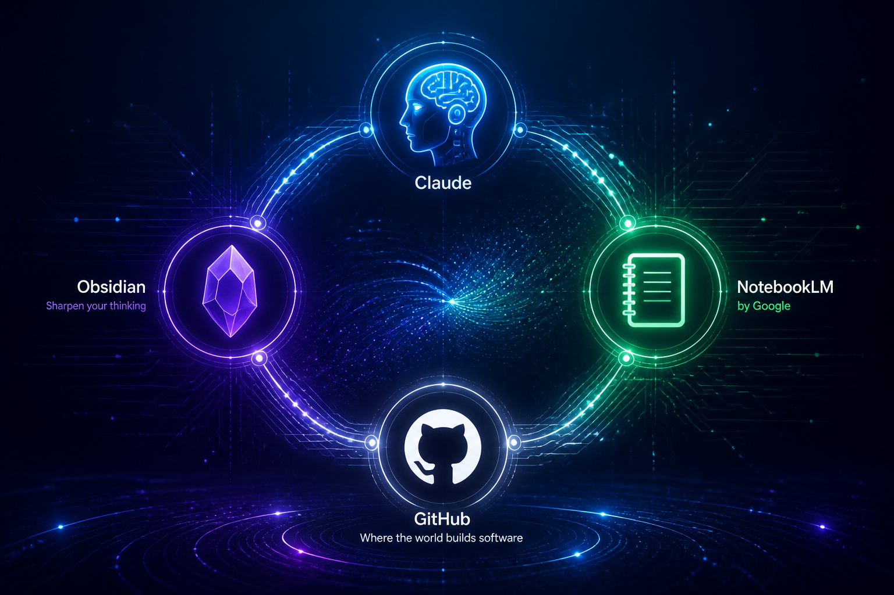
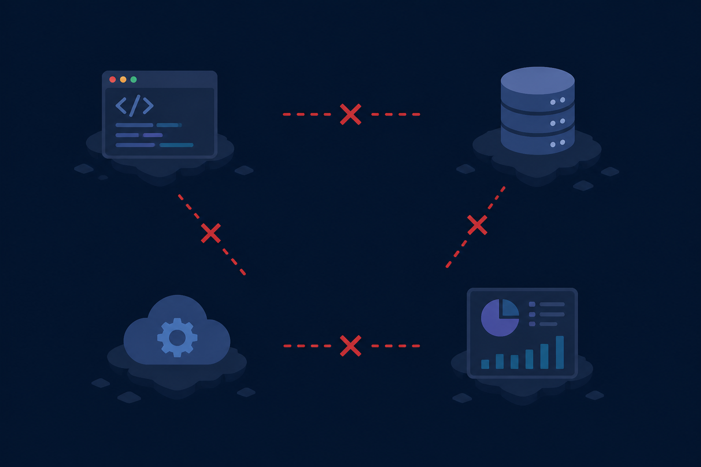
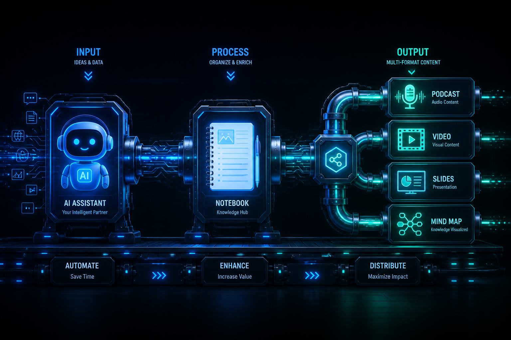
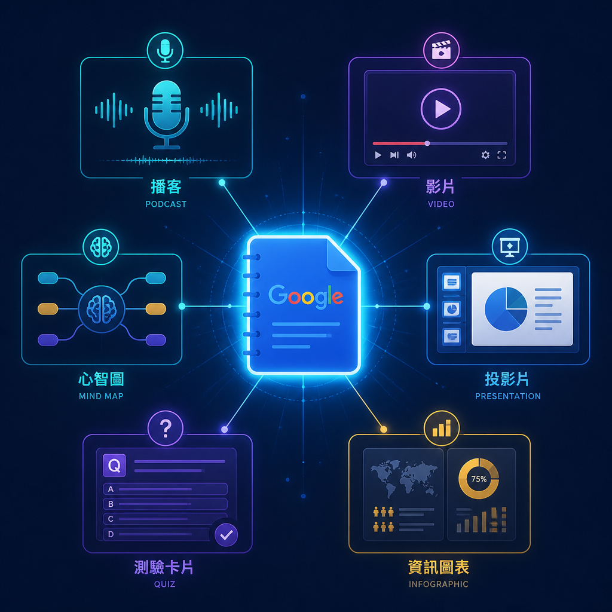
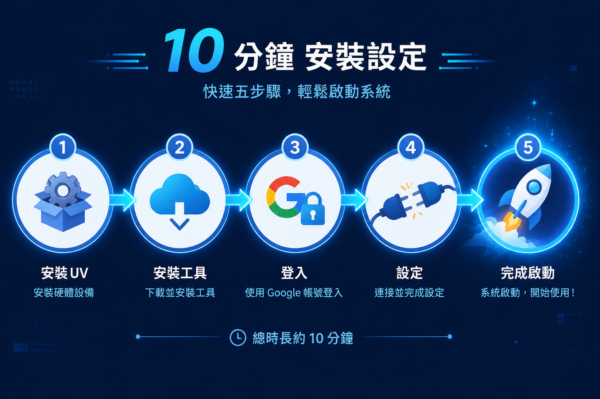
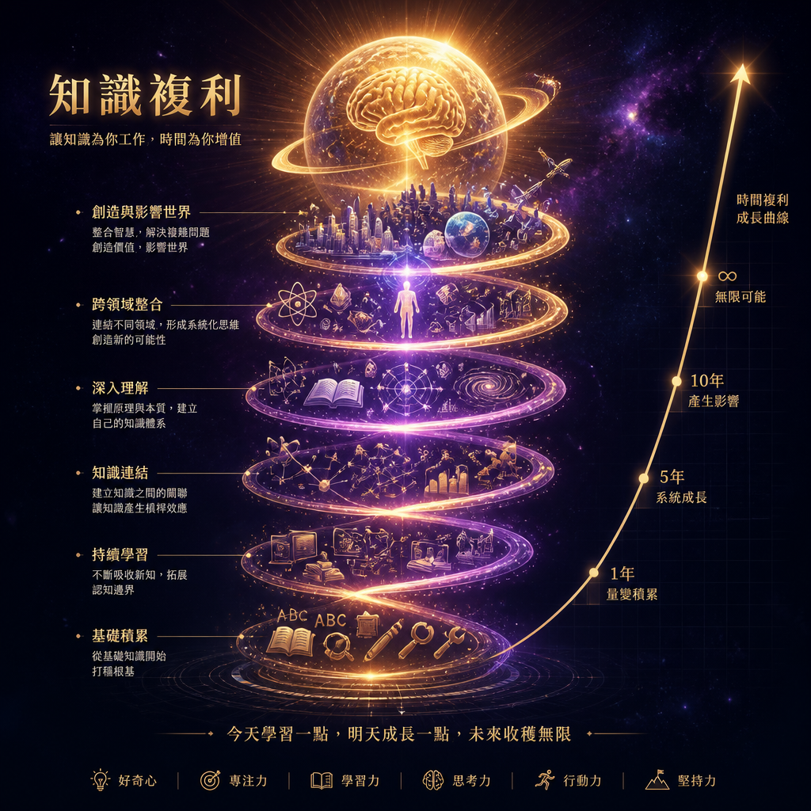

Claude、NotebookLM、Obsidian 互不溝通，資料四處分散，形成資訊孤島。
每次開新對話都要重新說明，AI 永遠不記得你是誰、你在做什麼。
洞見停留在聊天記錄裡，無法積累成可以複用的知識資產。
功能強大卻全靠手動點擊，無法接入任何自動化流程，耗費大量時間。

MCP 透過瀏覽器自動化遠端控制，突破限制。
URL、YouTube、PDF、Google Drive 等，全部自動上傳。
安裝 → 登入 → 設定 → 重啟，馬上可用。

告訴 Claude Code 你要研究的內容或貼上連結
Claude Code 自動幫你新增一個對應主題的筆記本
支援 URL、YouTube、PDF、Google Drive 等 11 種格式，自動批次上傳
Gemini 自動處理所有資料，隨時可以開始提問與生成內容

永久可讀，不綁定任何服務，資料完全屬於你。
建立知識網絡，實現跨文件的意外發現與連結。
Claude 分析完畢後，直接寫入 Obsidian，無需手動複製貼上。
自動化流程
每次更新都有歷史記錄，隨時可回溯任何時間點的知識狀態，不怕誤刪。
在家、辦公室、手機，任何裝置都能取得最新的知識庫，隨時隨地可用。
一鍵分享整個知識庫給同事，讓大家站在同一個知識基礎上，減少重複工作。
資料不依賴單一服務，即使 NotebookLM 或 Obsidian 失效，資料也不會遺失。
📚 一鍵備課流程
✍️ 文章發佈自動化
✅ 效果：以前需要 30 分鐘的重複操作，現在一行指令，背景自動完成。
Python 套件管理工具，是後續安裝的前置需求
安裝 MCP 工具，內含 35 個 NotebookLM 控制指令
開啟瀏覽器登入 Google 帳號，單次設定，會話持續數週
自動修改 Claude Code 設定檔，啟用 MCP 連線
現在可以對 Claude Code 說「幫我在 NotebookLM 建立一個筆記本」

每次從零開始
手動操作各種工具
知識無法累積
AI 自動幫你累積知識
系統越用越聰明
複利越滾越大
